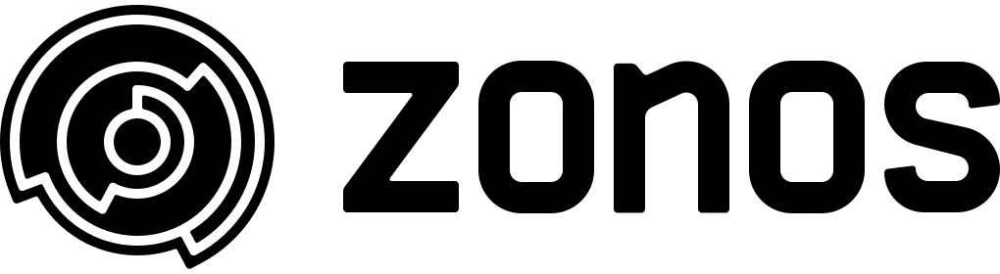

The mark
The Cipher
The circle in the Zonos logo is not decoration. It is a cipher: a word, encoded as a coil. It exists because of a barley field in Wiltshire, and it is the reason the campus keeps reaching for coils, codes, and things worth decoding.
What it means
The crop circle and the key
In June 2008, a crop circle appeared near Barbury Castle in Wiltshire, England. It looked like an elaborate, meaningless spiral until a retired astrophysicist named Mike Reed saw a photograph a year later and recognized the formula: the pattern encoded the first ten digits of Pi, 3.141592654. A symbol that looked impossibly complex turned out to carry one simple, exact meaning, once someone found the key.
The Zonos mark repeats that idea. Cross-border trade looks the way the crop circle looked: duties, taxes, compliance, payments, and surprises tangled into paperwork most people cannot read. The company's work is finding the key. The mission is creating trust in global trade, and the cipher is that mission drawn as a picture: something complex made simple, by decoding it.
The mark carries an encoded word the same way the crop circle carried Pi. It is also a wink at the culture: a science-fiction-loving team that named its values from Galaxy Quest put a decodable secret in its own logo. The full story is in the 2019 essay, Zonos, decoding cross border.
The cipher keeps landing in campus ideas because it is buildable: the hand-laid basalt coil on the runway page, the 60-foot courtyard centerpiece, door handles shaped as the mark. For the courtyard version, pavers are one option and anything is an option; the direction I keep coming back to is an inset, sunk like a fire pit with steps down, so you walk into the mark rather than across it. A logo gets printed on a wall; a cipher gets walked, touched, and decoded. Visitors can be handed the key.
How it encodes
The formula
Each letter takes its position in the alphabet: A is 1, Z is 26. A letter is drawn as an arc that sweeps its share of a full circle, so A sweeps 1/26th of a turn and Z sweeps the whole turn. The first letter draws on the innermost ring, each following letter steps one ring outward, and every arc starts exactly where the last one ended. The result is one continuous path, all the way in and all the way back out. A period becomes a dot; a space becomes a tick between rings.
The breakdown
How the mark spells Zonos
Every letter takes its position in the alphabet and sweeps that share of a full turn: 26 letters, 360 degrees, so each letter is worth about 13.8 degrees per alphabet position. The word starts at 12 o'clock and reads clockwise, one ring per letter, inside out. Each colored trace below rides inside the carve it decodes.
| Ring, inside out | Letter | Alphabet position | Share of a turn | Sweep |
|---|---|---|---|---|
| 1 · the center dot | Z | 26 | 26/26 | 360°, a closed circle: the dot survives inside it |
| 2 | O | 15 | 15/26 | 208°, starting at 12 o'clock |
| 3 | N | 14 | 14/26 | 194°, starting where the O ended |
| 4 | O | 15 | 15/26 | 208°, continuing the spiral |
| 5 · the rim | S | 19 | 19/26 | 263°, the thin outer cut; its end is the tail |
Read it back: 26, 15, 14, 15, 19 → Z, O, N, O, S. The same key reads the mark below; count it yourself.
The mark, annotated
Count it yourself
The mark below is the official one, drawn from the logo's own vector paths. Turn on the guides to see the 26 spokes that divide the circle into letters, and turn on the letters to count each ring: the alphabet runs along every carve in that ring's color, and the letter each ring stops on is the letter it encodes.
Ring colors match the breakdown above: Z 26/26 O 15/26 N 14/26 O 15/26 S 19/26.
Assets
The official marks
The real logo, for reference and reuse. The mark in the logo is the cipher at its proper proportions: the coil fills its circle, the strokes carry real weight, and the wordmark sits beside it.
{kind=link}

{kind=link}
